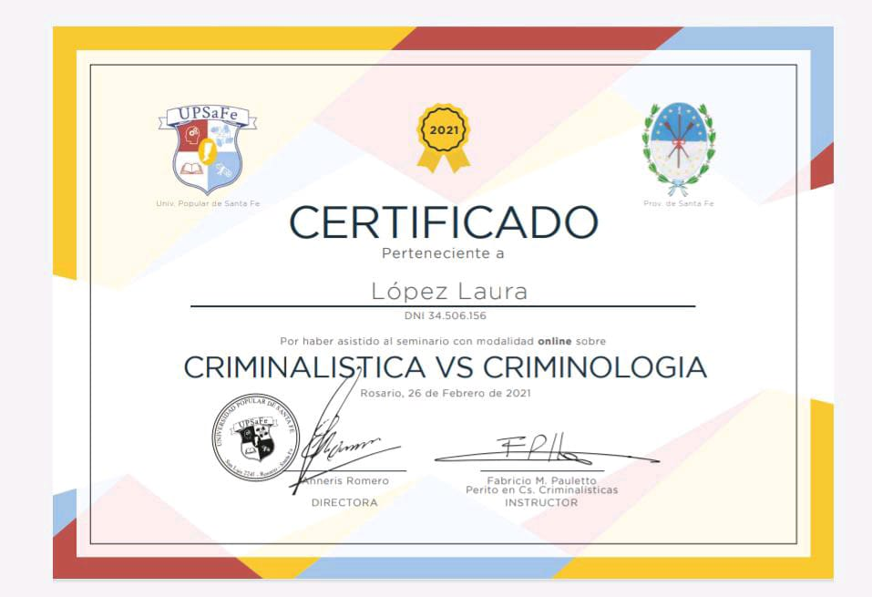
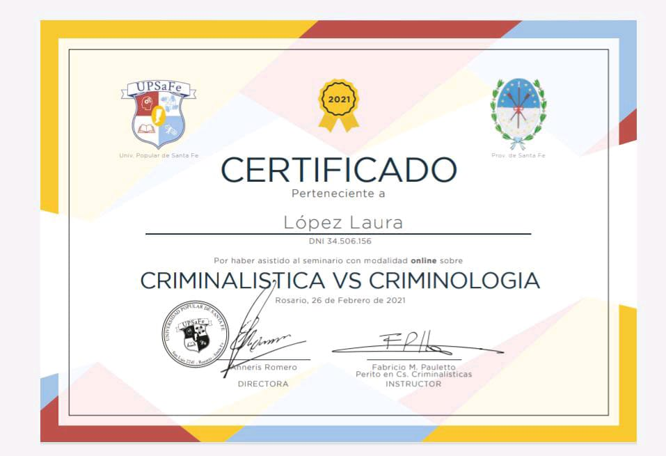
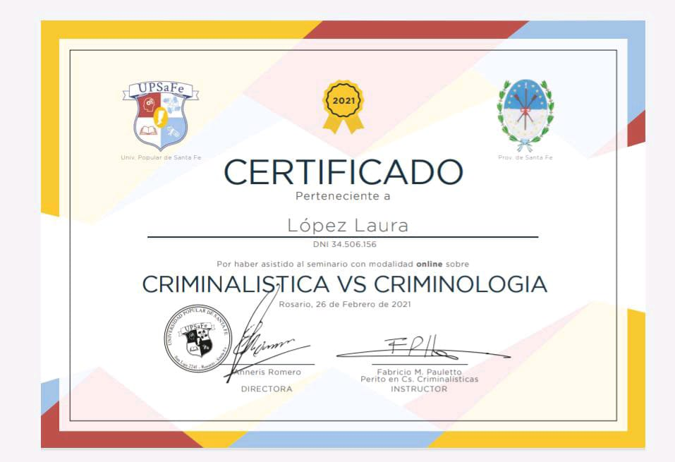

Lic. en Criminalística - 2022
En Curso
Auxiliar en Criminalística y Criminología - 2021
Completo
Perito Auxiliar en Turismo - 2014
Secundario Completo
Estimados, los invito a visualizar mi CV; actualmente me desempeño como Agente de Prevencion de la Ciudad, desde hace casi 6 años. Realizamos tareas para brindar seguridad a los vecinos, y colaborando con personal policial, bomberos, SAME, defensa civil, transito y lo que requiera el orden publico. En lo que refiere a mi educacion, soy Auxiliar en Criminalistica y Criminologia, y realizando la Licenciatura en Criminalistica. Con un gran interes en seguir formandome en distintos ambitos, para desenvolverme en mis habilidades y continuar ampliando mis conocimientos.
Desde 01/05/2017 hasta Actualidad
Desde 31/10/2016 hasta 21/11/2016
Atención a los abogados, toma de datos en programa Lex-Doctor, agenda y trámites
Desde 01/03/2016 hasta 31/04/2016
Ventas en vía pública de productos intangibles (Seguros-Créditos)
